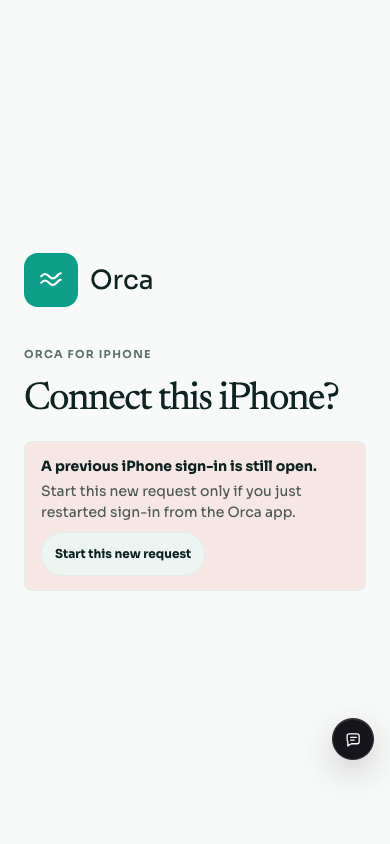
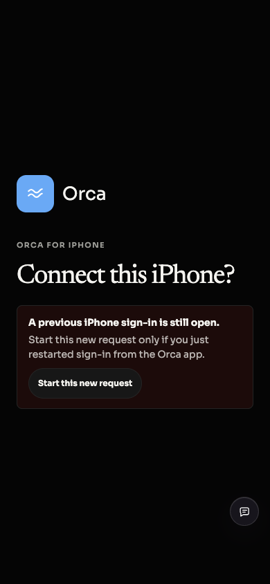
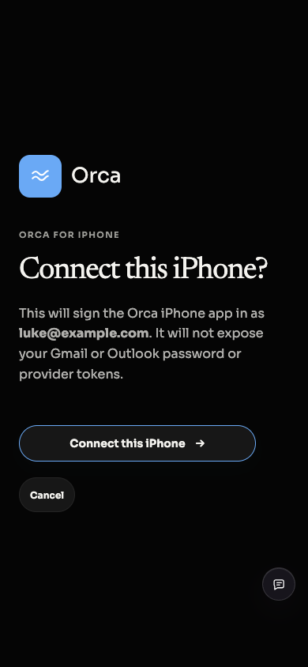
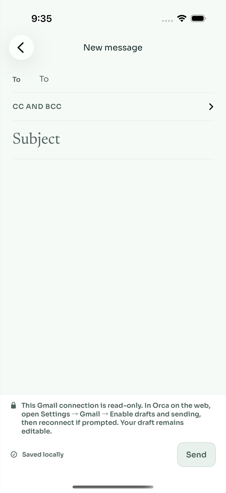
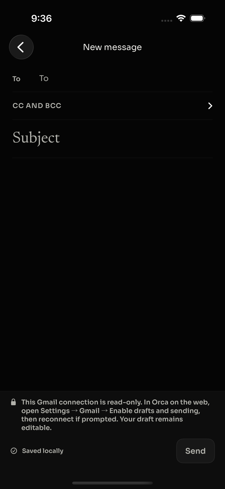
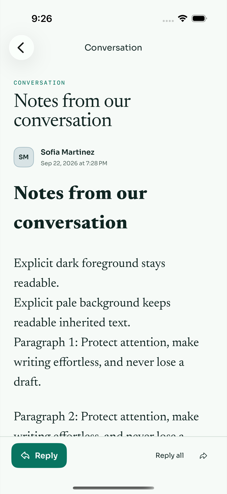
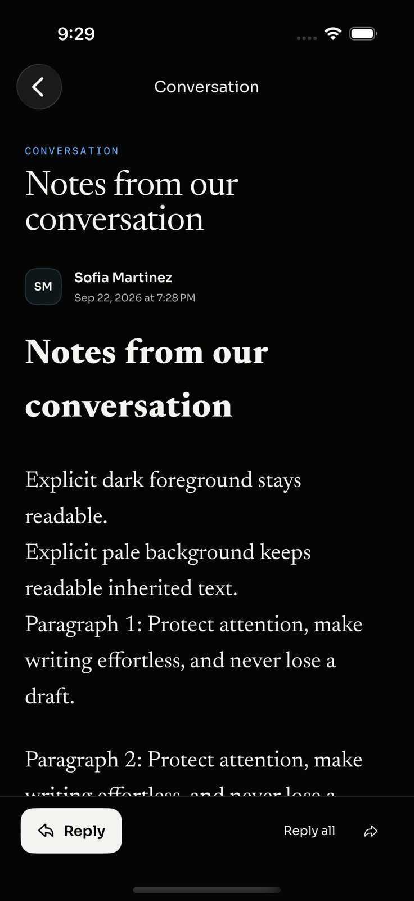

← iOS verification · PR #198
Review corrections
Follow-up to the web, API and architecture reviews. Mailbox data and deliveries in verification are synthetic.
Recovery and delivery boundaries
- Browser sign-in: cancelled provider login can resume; abandoned consent requires an explicit, same-origin restart, preserving request and browser-session ownership checks.
- Drafts: confirmed pre-send failures return to a safe editable or reconciliation state. Uncertain delivery retains its original idempotency key. Read-only accounts explain how to enable sending.
- Reply recipients: outgoing messages and SENT aliases use external conversation recipients, with owned addresses excluded and To/Cc kept distinct.
- Notifications: insertion sequencing handles accounts that finish syncing out of order. Live clock reads and lease-owner checks protect overlapping workers.
All feedback from the web, API and architecture reviews is resolved by the reviewers: ten fixed items and one dismissed finding, including duplicate reports. Independent verification includes the expired/pruned binding timeline and reversed-timestamp migration upgrade.
Browser recovery
Headless browser verification on the actual web application with controlled API responses: explicit restart → named-account consent → cancellation. Backend tests separately cover cookies, request ownership, origin checks and invalidation.

Light · recover an abandoned sign-in.
Dark · readable recovery action.
Restart still requires named-account consent.Read-only writing
Drafts remain editable while Send is disabled. The complete guidance names Orca on the web and the Gmail permission control.

Light · clear permission repair path.
Dark · readable guidance and disabled Send.Styled email readability
The production thread API removes author foreground/background colors and stylesheets before rendering or caching. New regression coverage exercises foreground-only and background-only mail. The adaptive reader remains intact; the reviewer dismissed the original contrast finding after verifying this boundary. Scripts and remote resources remain blocked.

Light · author colors normalized by the thread API.
Dark · sanitized content inherits Orca’s readable palette.Verification
- API route suite: 36/36 passed with a 60-second per-test timeout. An earlier default five-second run timed out under shared-machine load.
- Final native build and 24 unit tests passed. Six normal-mailbox UI executions plus two read-only composer executions passed across light and dark appearances. The synthetic delivery ledger contains exactly one send.
- Push scheduler and migration regressions: 13/13 passed; corrected upgrade mapping passed independent reviewer verification.
- Browser recovery interaction tests: 2/2 passed. Mobile authentication: 12/12 passed (76 assertions), including expired/pruned binding recovery. API, shared and web typechecks passed. Clean, stacked, replayed and reset migration checks passed.
Reproduce the read-only mailbox
bun apps/api/scripts/mobile-fixture.ts --read-only
apps/ios/OrcaUITests/run-fixture-tests.sh /path/to/connection.json SIMULATOR_UDID
The fixture stays on loopback and simulates all provider operations. Its connection file contains only a synthetic bearer; do not use it for production access. No real emails or APNs alerts were sent. Physical-device signing and live notification acceptance remain outstanding.